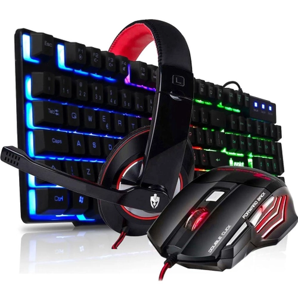
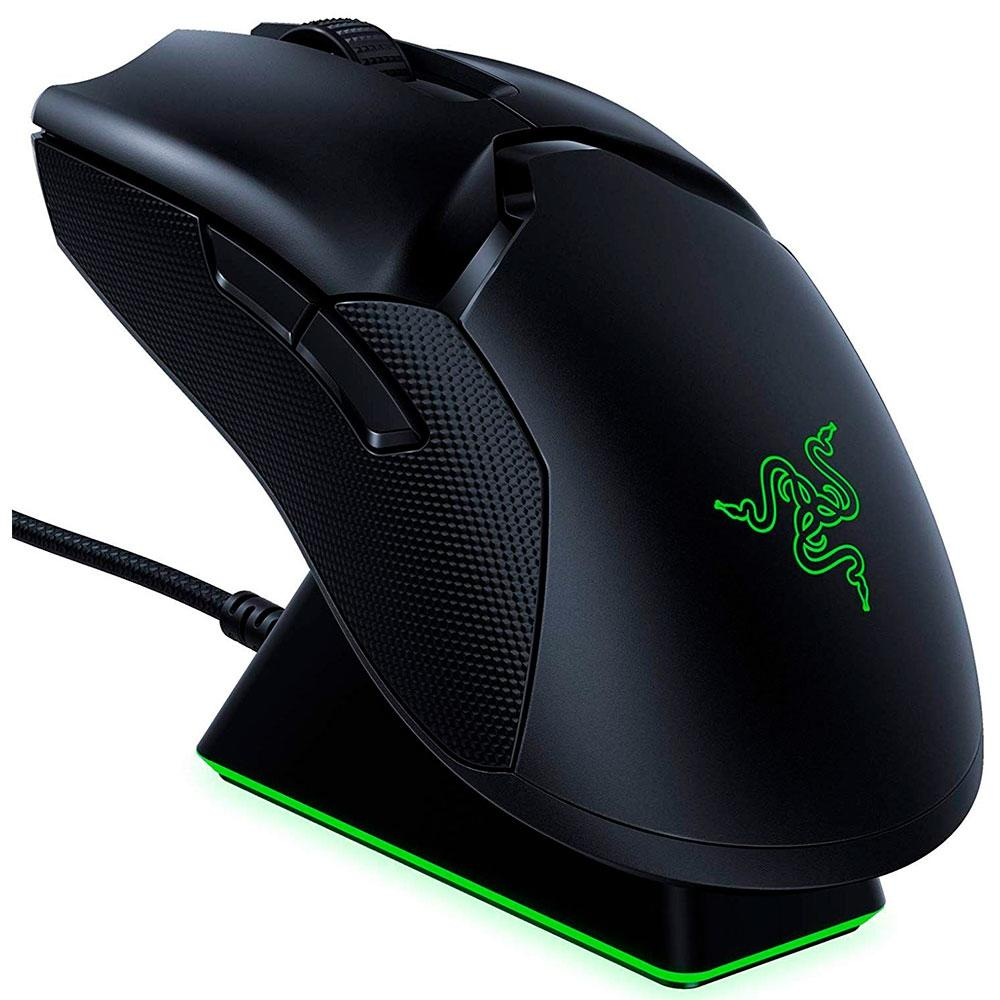
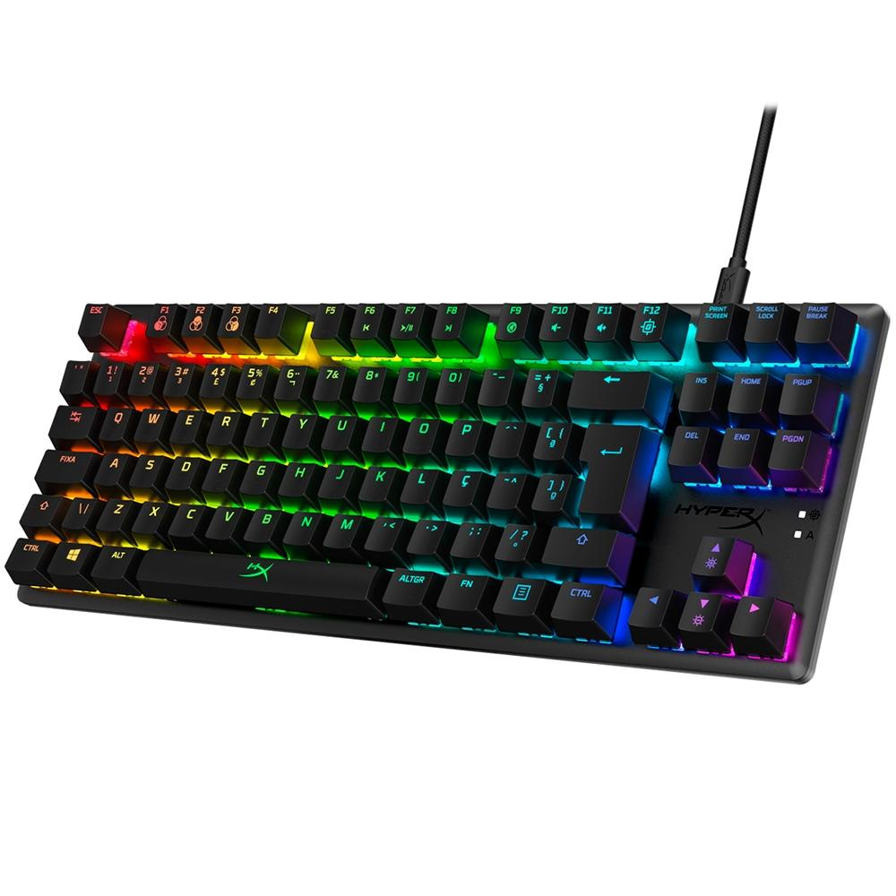
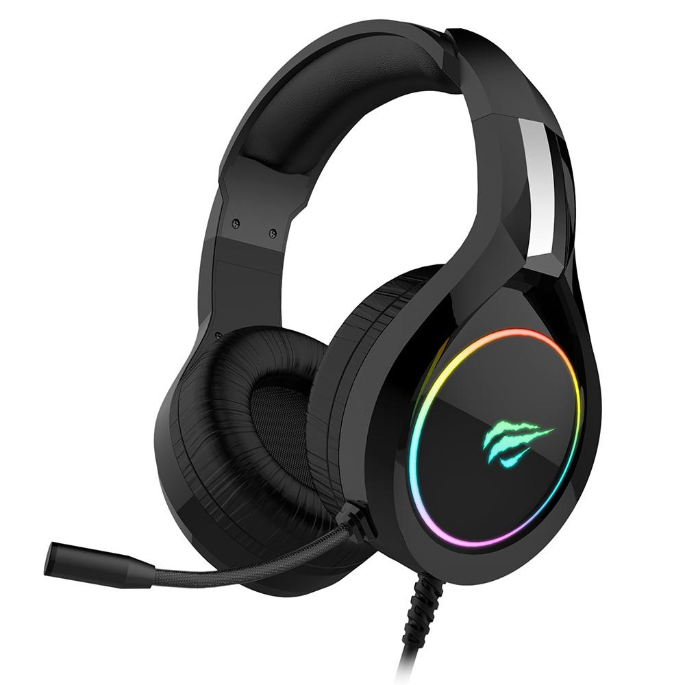

Periféricos

Periféricos são aparelhos ou placas que enviam e recebem informação do computador, em ligação ao CPU da máquina.
Os exemplos de mais comuns periféricos são: pendrives, impressoras, digitalizadores, leitores ou gravadores de CDs e DVDs, leitores de cartões, mouses, teclados, webcam e etc.
Dispositivos USB:
USB é a sigla em inglês de Universal Serial Bus (“Porta Universal”, em português), um tipo de tecnologia que permite a conexão de periféricos sem a necessidade de desligar o computador, além de transmitir e armazenar dados. As portas USB foram criadas para facilitar a instalação e o uso de equipamentos conectados aos computadores. Há conectores USB do tipo A, que funcionam para transmitir dados e energia, e geralmente possuem cabos fixos. O USB tipo B faz parte de um cabo removível, e serve para enviar energia.Dispositivos sem fio:
Os dispositivos sem fio usam sinais de rádio para se comunicar e transmitir dados pelo ar, eliminando a necessidade do cabeamento tradicional.PRODUTOS
Mouse Sem Fio Gamer Razer Viper Ultimate, Chroma, com Dock, Optical Switch, 8 Botões, 20000DPI - RZ01-03050100-R3U1
A Vista: R$ 499,99
A Prazo: R$529,40 Em até 10x de R$ 52,94 sem juros no cartão Ou em 1x no cartão com até 10% OFF
Teclado Mecânico Gamer HyperX Alloy Origins Core, RGB, Switch HyperX Red, ABNT2 - 4P5P3A2#AC4
A Vista: R$ 449,99
A Prazo: R$ 529,40 Em até 10x de R$ 52,94 sem juros no cartão Ou em 1x no cartão com até 10% OFF
Headset Gamer Havit H2232D, RGB, Drivers 50mm - H2232D
A Vista: R$ 89,99
A Prazo: R$ 105,87 Em até 4x de R$ 26,46 sem juros no cartão Ou em 1x no cartão com até 10% OFF